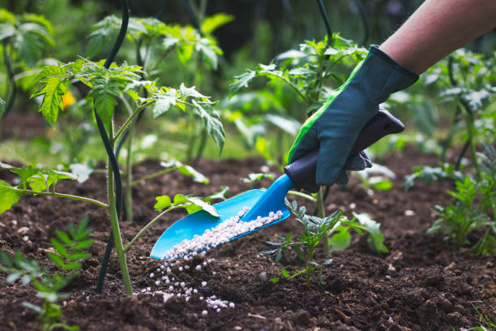

1, Fertlizer
Product detail
Fertilizer, natural or artificial substance containing the chemical elements that improve growth and productiveness of plants. Fertilizers enhance the natural fertility of the soil or replace chemical elements taken from the soil by previous crops.They are additional substances supplied to the crops to increase their productivity. These are used by the farmers daily to increase the crop yield. These fertilisers contain essential nutrients required by the plants, including nitrogen, potassium, and phosphorus. They also enhance the water retention capacity of the soil and increase its fertility.
What are the main types of Feritizer products?
There are mainly two types of fertilizer, these are Organic and Inorganic Fertilizer. Mainly our company Focused on the production of inorganic fertilizer but it also produce organic ferilizers.Organic fertilizers are Natural ferilizers they just obtained from plant and animals. They enrich the soil with carbon compounds. In organic Fertilizers are chemical fertilizer helps the plant by giving variety of neutrients.Our company have a plan to combine organic and inorganic ferilizer to get best product.
Produxt features
- Free-flowing (easily applied)
- Consistent in particle size with smooth and hard granules
- Easily spread - ensuring even distribution patterns
- Quickly dissolve when in contact with moist soil or water (avoid run-off)
- Free from contaminants and additives
Collection of variety of Fertilizers
- Nitrogenous Fertilizers
- Phosphate Fertilizers
- Complete Fertilizer (NPK)
Nitrogen fertilizers contain nitrogen necessary for crop growth. Nitrogen is the main component of chlorophyll, which maintains balance during photosynthesis. It is also part of plant amino acids and forms proteins. Nitrogen fertilizers improve the yield and quality of agricultural products.
The main nutrient in a phosphorus fertilizer is phosphorus. The efficiency of fertilizer depends upon effective phosphorus content, methods of fertilizing, properties of soil and crop strains. Phosphorus found in the protoplasm of the cell plays an important role in cell growth and proliferation. The phosphorus fertilizer is beneficial for the growth of roots of the plants.
Compound fertilizers are not always well adapted to different kinds of soils. For that reason mixed fertilizers containing two or more materials in suitable proportions are used according to the needs of different soils. Mixtures usually fulfill the nutrient deficiencies in a more balanced manner and require less labour to apply than different fertilizers used separately.